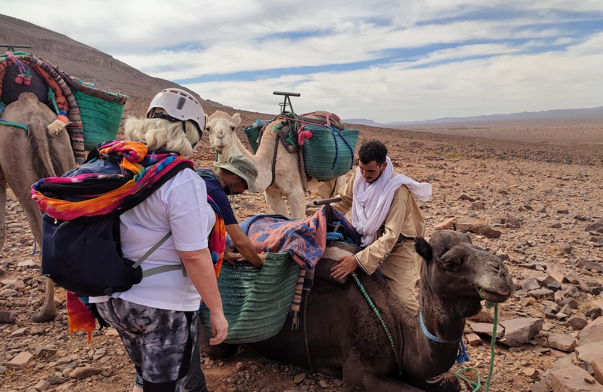

100km Across the Sahara
I was employed by a UK company to lead a group of 14 adults during a 100km trek across the Sahara Desert.
I was working with another guide, Jonny, who had led the trek before. The hikers were a charity fundraising group from the UK, and had raised over £50,000 for a charity that the group worked for or were connected with.
Jonny and I met the group at Stansted Airport, and despite the 6am flight they were full of beans, cheering and singing on the plane. From Marrakech it was a 3 hour bus journey south to Ouarzazate, where we stayed in a hotel. Another 4 hours on the bus in the morning, and we reached the edge of the desert where the in-country team of guides and gear were waiting.
Our team consisted of Jonny and I, the group of 14 hikers, Ibrahim and Omar who were the Moroccan guides, 2 chefs, 2 porters, and 2 cameleers, who were responsible for the 6 camels. The group would be camping in the desert, and each morning the camp would be packed down and transported in 4x4’s to the next site. The camels would follow the hikers, carrying extra water and being available in case one of the team could no longer walk.
The first afternoon’s hike was 14km, and included 275m of elevation, over a hill which was close to our lunch spot. The hill would be the most significant climb of the whole trek, and some of the group were anxious about their fitness.
One of the group had caught a stomach bug in Ouarzazete, and it was agreed that they would take a 4x4 to camp and rest ahead of the long second day of hiking. The group set off, jubilantly, and soon we began zig-zagging up the ridge.

As we began climbing one of the group struggled with their breathing, and told me that they would not be able to do the hike. I tried to encourage them; we were 20 minutes into a 5 day journey, but they were adamant. They climbed onto a camel, which refused to walk with its new cargo. Undeterred, the guest christened the camel ‘Bob’, and was making jokes about how they were reducing Bob’s life expectancy as they plodded onwards.
As we continued uphill another two of the group dropped out, and within the first hour we had 3 people on camels. No one had used a camel during the previous 5 day trek that Jonny had led in the Sahara. I think that the group using camels so early in the trip set a precedent and gave the team an ‘out’, which psychologically wasn’t helpful so early on.
Some of the behaviours that I’ll nudge young people away from on expeditions were being repeated with the group, such as hiking with empty water bottles, not wearing sunscreen and a wide brimmed hat, and using their drinking water as a shower to cool themselves down. We were trying to promote good habits but the group was slow in giving themselves the best chance of completing the trek. Sometimes it can be hard to get messages across to a group early on in an adventure when trust hasn’t yet been established.
At the end of the first day, 4 of the hikers were on camels, and managing the group and keeping everyone together, and moving, was a challenge. The pace of the group was slow and we arrived at camp just before dark. The group settled in their tents and later we sat down to a dinner of chicken tagine. Jonny called our contact from the UK company via a satellite phone to explain we have had some issues with group fitness. Day 2 would be the most strenuous of the whole trip, and it was agreed that the hikers that had spent the majority of the first day on camels would take a 4x4 to the lunch site tomorrow, where they could then decide whether they’d like to rejoin the hike. We set breakfast at 6am to give ourselves the best chance of covering the distance.